Comparaison
Moteurs COSMO et RC-Astro
Trois outils de COSMO font tourner soit un réseau maison, soit, depuis une installation sous licence, le produit RC-Astro qui fait le même travail. Chaque comparaison ci-dessous montre la même pile linéaire passée par le même outil, une fois avec chaque moteur.
Méthode
- Même entrée : la pile après l'étape Background (GraXpert), à l'état linéaire.
- Réglages par défaut pour les deux moteurs, tels que COSMO les met quand le moteur est choisi.
- Même affichage : l'étape Stretch de COSMO (automatique) est calculée sur l'entrée et appliquée telle quelle à l'entrée et aux deux résultats, puis la même Saturation. Le retrait des étoiles est montré sur l'image étirée sur laquelle la séparation travaille, avec la même Saturation.
- Recadrages à 100 % sauf mention ; les boutons passent d'un moteur à l'autre et montrent l'avant / après de chacun.
Versions
- COSMO
- COSMOSharp v16, COSMODenoise v2, COSMOStars v78b
- RC-Astro (outil en ligne de commande 2.6.9)
- BlurXTerminator AI5, NoiseXTerminator AI3.1, StarXTerminator AI11
Affinage COSMOSharp / BlurXTerminator
Déconvolution de la pile linéaire : étoiles réduites et arrondies, structure fine de la nébuleuse rendue. Page de l'outil Sharpen.
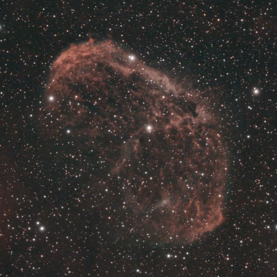
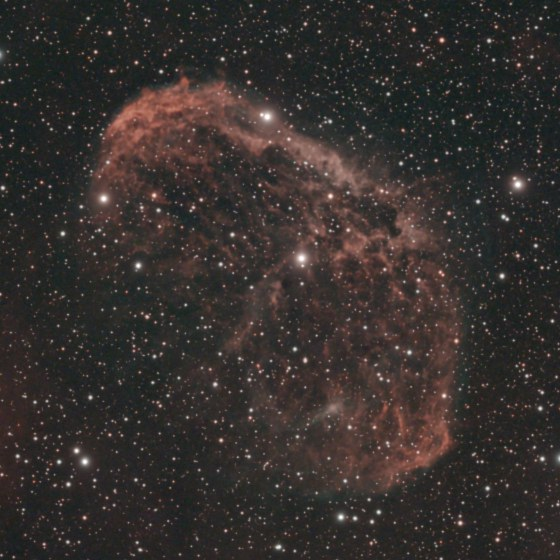
BlurXTerminator AI5COSMOSharp v16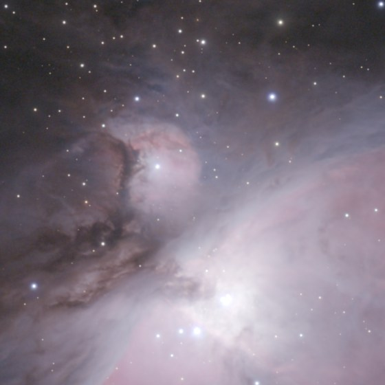
BlurXTerminator AI5COSMOSharp v16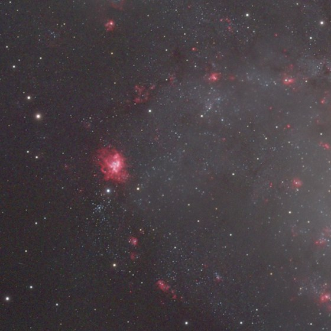
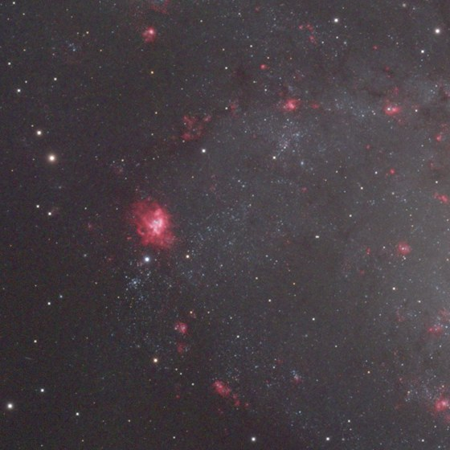
BlurXTerminator AI5COSMOSharp v16Réduction du bruit COSMODenoise / NoiseXTerminator
Réduction du bruit sur la pile linéaire, avant l'étirement. Page de l'outil Denoise.
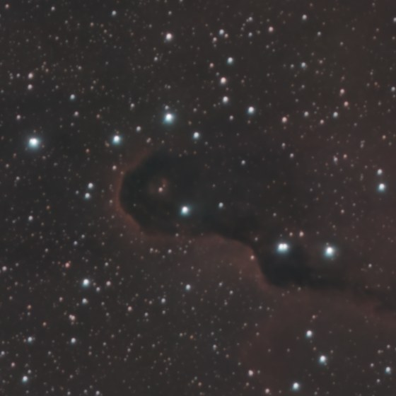
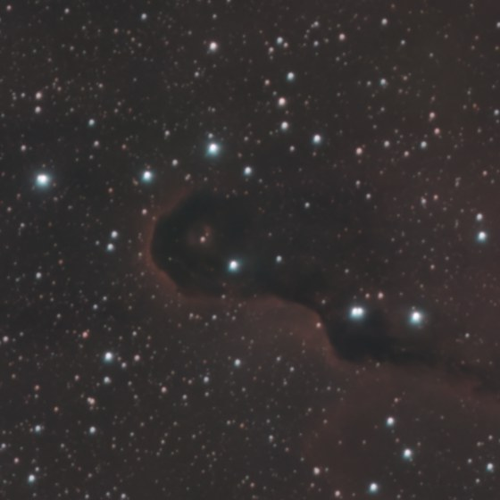
NoiseXTerminator AI3.1COSMODenoise v2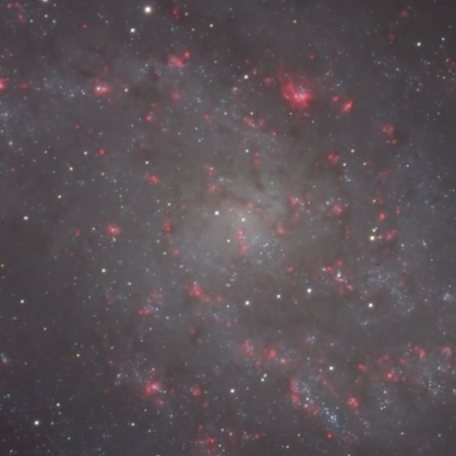
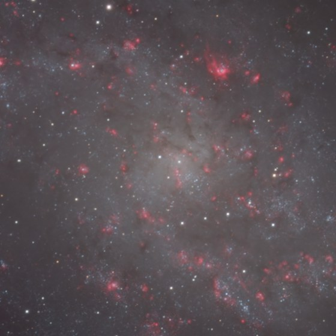
NoiseXTerminator AI3.1COSMODenoise v2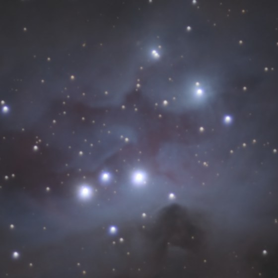
NoiseXTerminator AI3.1COSMODenoise v2Retrait des étoiles COSMOStars / StarXTerminator
Séparation des étoiles et de la nébuleuse : la couche nébuleuse, sans ses étoiles. Page de l'outil Separate stars.

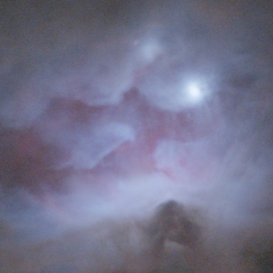
StarXTerminator AI11COSMOStars v78b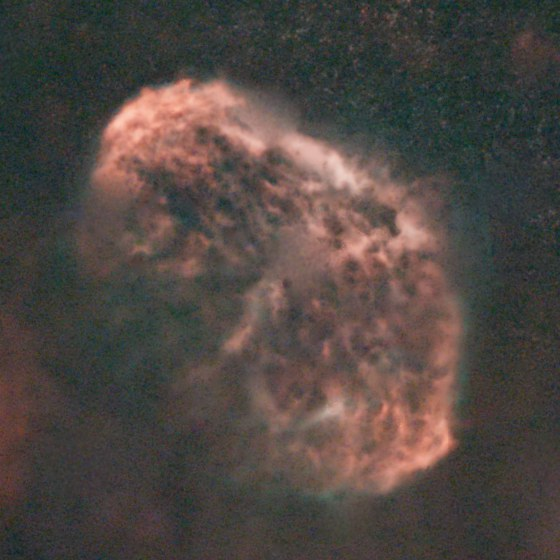
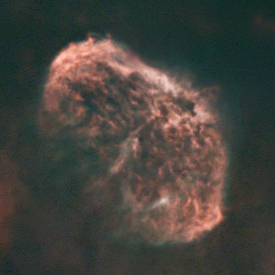
StarXTerminator AI11COSMOStars v78b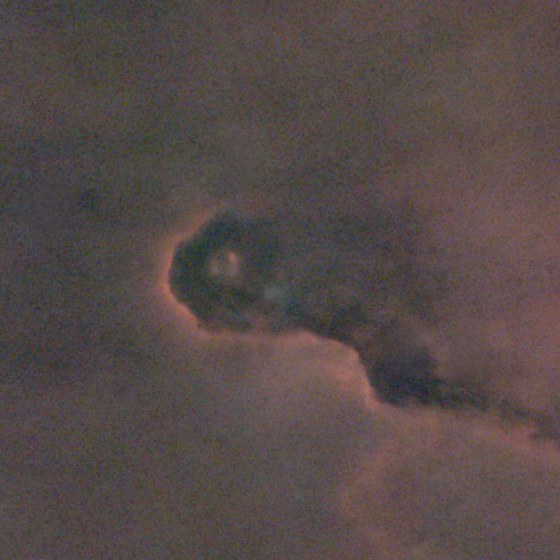
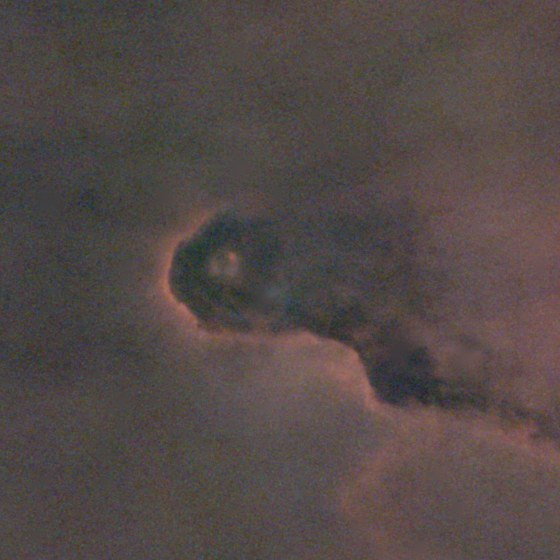
StarXTerminator AI11COSMOStars v78bBlurXTerminator, NoiseXTerminator et StarXTerminator sont des produits de RC-Astro, LLC. COSMO les fait tourner par l'outil en ligne de commande de RC-Astro quand ils sont installés et sous licence sur l'ordinateur ; ils ne font pas partie de COSMO.